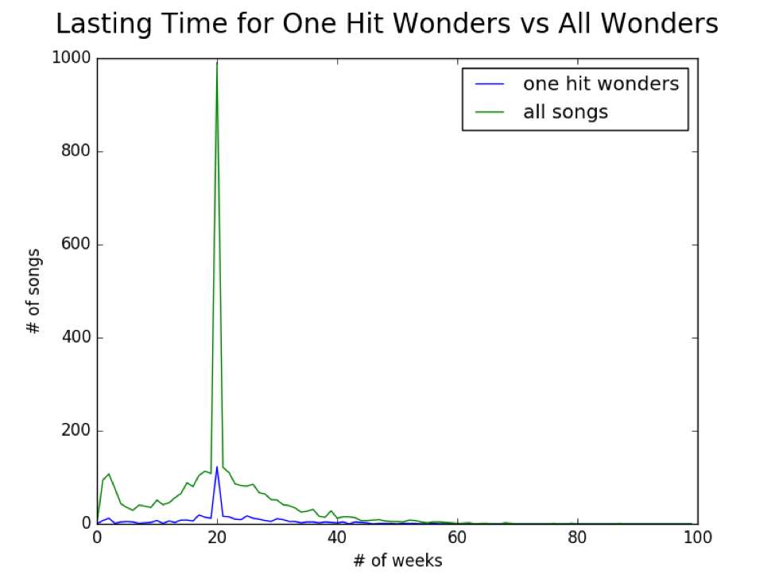
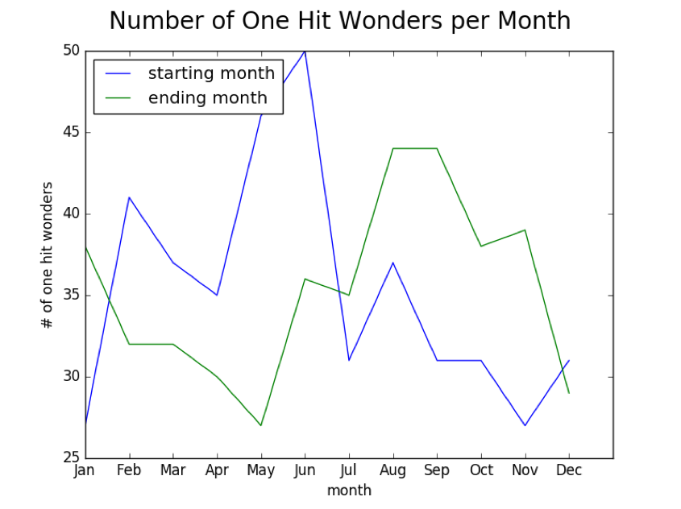

Blog Post 3: 4/12/17
Further Progress:
We have continued to make further progress by analyzing our data and looking for different insights. One interesting characteristic of billboard top 100 data that we discovered while looking at the staying power data is that songs that are declining in position and have sunk below the top 50 are automatically removed. Thus, we saw a spike in our data of songs lasting only 20 weeks. To analyze this further we graphed one-hit wonders and how many weeks they remained on the top charts. We then compared this to wonders (songs that entered the top 40) and their duration on the top charts. This can be seen in the following graph.
Another analysis we performed on our data was to see the importance of the time of year that a song was released in, in determining a one-hit wonder. This insight could help us in engineering more effective features for our machine learning. By comparing the number of one-hit wonders per month we were able to better visualize their rise and fall over time. We first chose to plot the number of one-hit wonders per month by start date to see when the majority of one-hit wonders rose to the top of the charts. By doing this we saw that the majority of one-hit wonders started in May and June. This was interesting to see as it coincides with the beginning of summer, but July and August that were later on in the summer were much lower. We also plotted the month of the one-hit wonders in which they exited the top charts and saw that the majority ended in August and September. This shows that by the end of the summer the popularity of the one-hit wonder has died down and they are no longer a top song in the billboards. The below graph depicts the movement of one-hit wonders by number for the various months.
Moving forward:
Our next course of action is to do some statistical analysis on our data set. We have several ideas in mind such as analyzing the percentage of one hit wonders that occur in each month or quarter year and the percent of one-hit wonders that correspond to each genre. We are also planning on using conditional probability to compare the relationship between one-hit wonder and other top songs. By using statistics we hope to gain further insight into our data. Another one of our ambitions is to compile a feature set that is comprehensive enough that we can predict, to a reasonable degree, whether a song is a one-hit wonder. To do this requires a significant amount of work, as we must refine our machine learning model and add to the feature set. Adding to the feature set could be accomplished by scraping additional song data from sites such as Youtube to make our data set more robust. Exploring YouTube viewership for one-hit wonders would be an interesting approach that could add a lot of distinguishable features to our data. By looking into view-counts while the song is in the top 100, we can glean more information about a one-hit wonder. An additional approach to improving our machine learning would be to feature engineer some more effective features for our classifier. This is an open ended area that we look forward to experimenting with to craft an effective predictor. The last main area that we aim to focus on is creating some more visualizations that graphically display our findings in a clear way. Some visualizations that we aim to create are a plot graphing the trajectories of all one-hit wonders over time and a graph comparing popularity of one-hit wonders and their genres vs not one-hit wonders. We plan to use matplotlib and D3 to create these visualizations. The main goal of them will be a clean and concise way to present the large amounts of data we have.
Return to Home Page